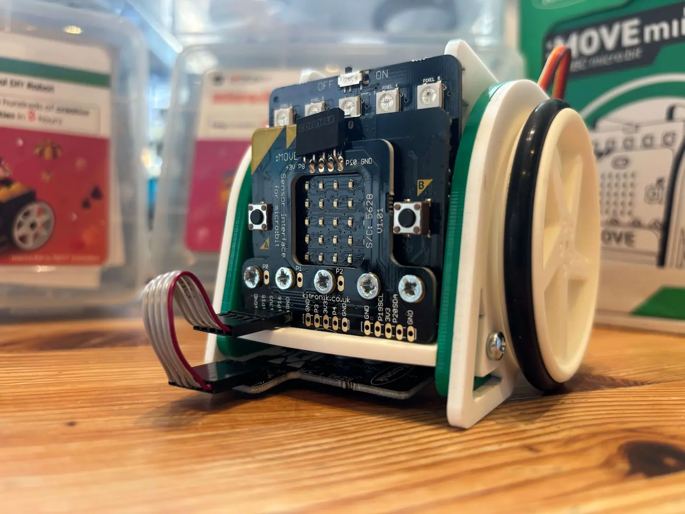
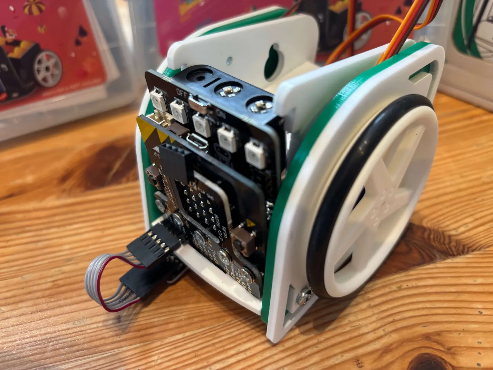
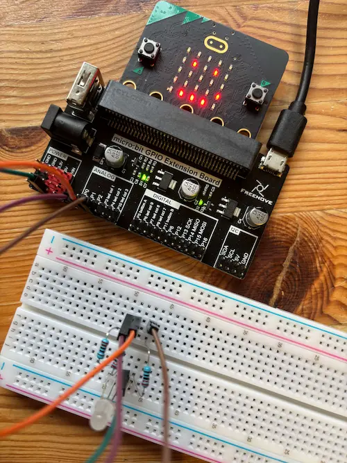
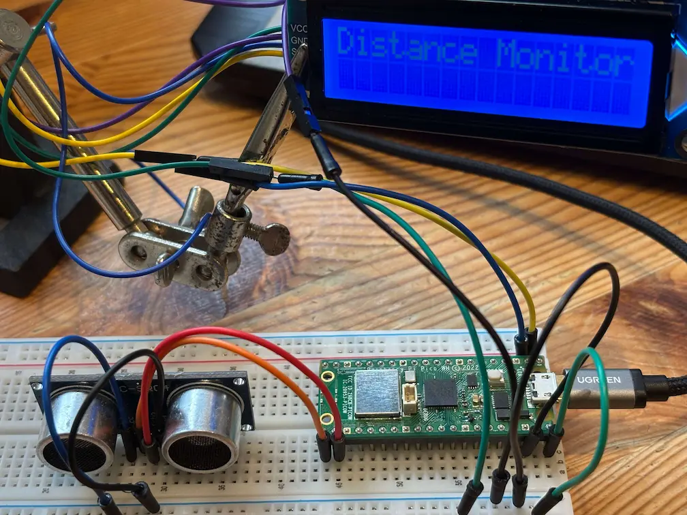

Bringing physical computing hardware to your school, we can cater for small groups in extra-curricular sessions, catch-up sessions, breakfast clubs, after school clubs and masterclasses. We'll bring our state of the art equipment and deliver interactive and engaging sessions that bring Computing to life!
Enquire About School BookingsLed by an experienced secondary Computer Science educator and software developer with three decades across education and industry in the South West, STEM Clubs Bristol bridges the gap between abstract theory and real-world engineering. Fully DBS checked and operating in strict accordance with Keeping Children Safe in Education and institutional safeguarding policies.
We provide all the extra hardware and resources and working with your school's ICT infrastructure, allow your students to move beyond the screen and get hands-on with micro-controllers, robotics, circuits, sensors and code.
This fun and interactive course will have a small group designing embedded systems and flashing microchips in no time! In other words, we’ll be using the micro:bit and MakeCode website to count steps, log the temperature, display fun reaction games and send coded messages.


This interactive session will see the students assemble frames, safely wire up servos and prep our robotic vehicles for raceday! Programming the trusty micro:bits, we’ll follow lines, avoid obstacles and transmit locations based upon the type of autonomous guided vehicle systems set up at key warehouses and factories across the globe. An exciting introduction to robotics, autonomous systems and sensors.

Get hands on with breadboards, jumper wires, sensors, buzzers, buttons, switches, LEDs, and display screens as we build and program circuits using the micro:bit, breakout boards and Python programming language, creating wonderful prototypes of traffic lights, burglar alarms, weather stations, and automatic plant and pet feeders.
Get hands on with breadboards, jumper wires, sensors, buzzers, buttons, switches, LEDs, and display screens as we build and program circuits using the Raspberry Pi Pico and Python programming language, creating wonderful prototypes of traffic lights, burglar alarms, weather stations, and automatic plant and pet feeders.
Just like Introducing Electronics with the Raspberry Pi Pico, we get hands on with breadboards, jumper wires, sensors, buzzers, buttons, switches, LEDs, and display screens to build and program circuits using the Arduino Uno R3 and C++ programming language. We will create exciting prototypes of traffic lights, burglar alarms, weather stations, and automatic plant and pet feeders. This course is excellent for teaching adaptability if students are mostly familiar with Python.
For the hardware and CLI enthusiasts, this course offers a deep dive into building networks using an unmanaged switch, Ethernet cabling, and a fleet of Raspberry Pi computers. We’ll use the command line and SSH to create nodes on our network covering key protocols, software deployment, management, and key security basics. This is a very hands-on course that builds a simple closed network completely isolated from your school network.

We can work with your Computer Science Department to support students with:
Empower your teaching team with practical, confidence-building professional development. We help non-specialist and specialist teachers alike get comfortable using physical hardware like micro:bits, Arduino, and Raspberry Pi directly in the classroom.
To discuss availability, pricing, or curriculum fit for your school, drop us a message below or email us directly at stemclubsbristol@gmail.com.